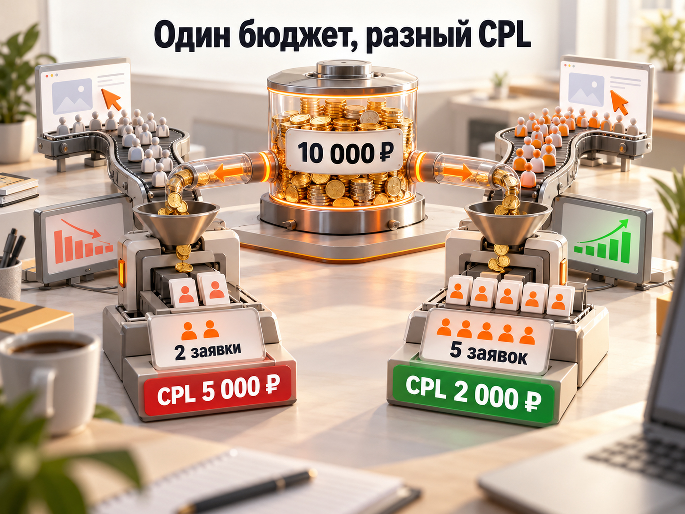

Блог о платном трафике
УТП в маркетинге: что это и как составить сильное предложение
УТП (уникальное торговое предложение) - это понятная и значимая для покупателя причина выбрать конкретный товар, услугу или компанию среди альтернатив. Сильное УТП объясняет, какую выгоду получит клиент, чем предложение отличается от конкурентов и почему заявленному преимуществу можно доверять.
Например, «качественный ремонт квартир» - общая рекламная фраза. А «фиксируем смету до начала ремонта, дополнительные работы согласовываем отдельно» - конкретное предложение, которое помогает снизить опасение клиента по поводу непредвиденных расходов.
Чтобы составить сильное УТП, нужно определить потребность аудитории, найти реальное преимущество продукта, сравнить предложения конкурентов и выразить ценность простыми словами. Затем проверить, действительно ли это преимущество влияет на выбор покупателей.
Для рекламы это особенно важно. Можно правильно настроить Яндекс Директ, подобрать целевые запросы и привести на сайт нужных людей, но слабое предложение ухудшит результат всей связки. Пользователь увидит такое же объявление, как у остальных, и не найдёт достаточной причины оставить заявку.
Что такое УТП простыми словами
УТП отвечает на один главный вопрос покупателя: «Почему мне стоит обратиться именно к вам, а не к конкуренту?»
Представим, что человек ищет компанию по ремонту квартир и видит несколько предложений:
- Ремонт квартир под ключ.
- Качественный ремонт по доступной цене.
- Ремонт любой сложности.
- Индивидуальный подход к каждому клиенту.
Формулировки разные, но смысл практически одинаковый. Выбрать между компаниями по ним невозможно.
Теперь появляется предложение:
«Фиксируем смету до начала ремонта. Дополнительные работы - только после согласования».
Если компания действительно работает так, у клиента появляется конкретная причина обратить на неё внимание. Предложение снимает понятный страх: первоначальная цена в процессе ремонта может неожиданно вырасти.
Именно в этом практический смысл УТП.
Уникальность не обязательно означает характеристику, которой физически нет больше ни у одной компании. Иногда достаточно найти существенное преимущество, которое конкуренты не предлагают, не подтверждают или недостаточно понятно объясняют.
Но просто переформулировать распространённое преимущество красивыми словами недостаточно. Если по существу предложения одинаковые, реальной отстройки от конкурентов не возникает.
УТП, оффер, слоган и позиционирование - в чём разница
УТП объясняет причину выбора, оффер предлагает конкретные условия покупки, слоган помогает запомнить бренд, а позиционирование определяет его место на рынке.
| Элемент | На какой вопрос отвечает | Пример |
|---|---|---|
| УТП | Почему выбрать именно вас? | Фиксируем стоимость ремонта до начала работ |
| Оффер | Что предлагается купить и на каких условиях? | Бесплатный замер при заказе ремонта |
| Слоган | Какую короткую фразу должен запомнить клиент? | Ремонт, который радует |
| Позиционирование | Для кого компания и чем она известна? | Компания по ремонту квартир бизнес-класса |
Оффер может быть временным: скидка, подарок, бесплатная доставка или специальная комплектация.
УТП обычно связано с самим продуктом, сервисом, технологией, специализацией или моделью работы компании.
Позиционирование шире УТП. Например, клиника может позиционировать себя как центр сложной ортодонтии, а конкретным преимуществом для определённой аудитории будет совместная работа ортодонта, гнатолога и хирурга над планом лечения.
Эти понятия могут пересекаться. Одно сообщение способно одновременно выражать УТП и условия оффера.
Что можно использовать как основу для УТП
Основой уникального торгового предложения должно быть реальное свойство продукта или компании, которое даёт покупателю значимую выгоду.
Чаще всего таким преимуществом становится:
- Специализация. Компания решает конкретную задачу или работает с определённой аудиторией.
- Скорость. Клиент получает продукт или услугу в понятный срок.
- Технология. Особый способ производства или выполнения работы даёт практический результат.
- Комплектация. Покупатель получает решение, которое не нужно дополнять другими услугами.
- Условия поставки. Наличие, минимальная партия, логистика или порядок отгрузки.
- Гарантия. Компания принимает на себя определённый риск покупателя.
- Прозрачная стоимость. Клиент заранее понимает цену и условия её изменения.
- Сервис. Покупатель получает поддержку, сопровождение или обслуживание после покупки.
Например, характеристика «собственное производство» сама по себе ещё мало что говорит клиенту.
Если собственное производство позволяет изготовить нестандартный размер без посредников, ценность может быть именно в этом.
Если оно позволяет быстрее выпускать заказы, предложение должно говорить о сроках.
А если никакой заметной выгоды покупатель не получает, выносить «собственное производство» в главный заголовок бессмысленно.
Проверка простая: после каждого преимущества задайте вопрос «Что конкретно получает от этого клиент?». Если понятного ответа нет, характеристика пока не стала основой сильного УТП.
Примеры слабых и сильных УТП
Хорошее УТП отличается от слабого не количеством прилагательных, а конкретной выгодой и понятным основанием для выбора.
Примеры ниже условные. Использовать такие обещания в реальной рекламе можно только тогда, когда компания способна их выполнять.
Ремонт квартир
Слабый вариант: «Качественный ремонт квартир под ключ».
Более сильный: «Фиксируем смету до начала ремонта. Дополнительные работы - только после согласования».
Во втором варианте появляется понятная ценность: контроль расходов и снижение риска неожиданного увеличения стоимости.
Поставка промышленного оборудования
Слабый вариант: «Надёжное промышленное оборудование по выгодным ценам».
Более сильный: «Подберём оборудование под ваши параметры и подготовим технический расчёт до покупки».
Компания продаёт тот же продукт, но показывает дополнительную ценность: заказчик может оценить соответствие оборудования своей задаче до заключения сделки.
Стоматология
Слабый вариант: «Современная стоматология с опытными врачами».
Более сильный: «Лечение сложных случаев прикуса одной командой специалистов».
Такое предложение имеет смысл для клиники, которая действительно использует междисциплинарный подход.
Оно выделяет конкретную специализацию и привлекает пациентов с соответствующими задачами.
Доставка
Слабый вариант: «Быстрая доставка по городу».
Более сильный: «Доставим заказ в течение двух часов».
Слово «быстро» каждый покупатель понимает по-своему. Два часа - конкретное условие, которое можно проверить.
Если срок зависит от района, времени заказа или других ограничений, их необходимо раскрыть рядом с обещанием.
Изготовление кухонь
Слабый вариант: «Красивые кухни по индивидуальным размерам».
Более сильный: «Изготовим кухню под нестандартную планировку с учётом существующих коммуникаций».
Такое предложение адресовано покупателям, у которых стандартные решения плохо подходят под помещение.
Но его сила зависит от рынка: если практически все конкуренты оказывают аналогичную услугу, потребуется более существенное отличие.
Оптовые поставки
Слабый вариант: «Большой ассортимент упаковки по выгодным ценам».
Более сильный: «Оптовые поставки упаковки партиями от 5000 штук».
Второе сообщение сразу обозначает формат сотрудничества и минимальный объём заказа.
Оно не обязательно уникально, но помогает подходящим покупателям быстрее определить, соответствует ли предложение их потребностям.
Это важное различие: конкретный оффер может быть полезен для рекламы, даже если сам по себе не обеспечивает уникальности на рынке.
Почему слабое УТП делает рекламу дороже
Слабое предложение способно ухудшить рекламную экономику даже при правильно настроенных кампаниях. Проблема возникает не только при привлечении пользователей, но и после перехода на сайт.
Рекламную кампанию часто пытаются исправить исключительно внутри рекламного кабинета: меняют ставки, запросы, аудитории, стратегии и объявления.
Но реклама приводит человека к предложению бизнеса. Если предложение проигрывает конкурентам, настройками эту проблему полностью не решить.
CTR объявления
На поиске человек обычно видит рядом несколько рекламодателей.
Если объявления выглядят примерно так:
- «Купить пластиковые окна».
- «Пластиковые окна по выгодной цене».
- «Качественные окна с установкой».
Пользователю приходится искать различия самостоятельно.
Конкретное предложение даёт дополнительную причину выбрать объявление.
Например: «Окна с монтажом. Фиксируем стоимость после замера».
Такое сообщение потенциально может повысить интерес подходящей аудитории. Однако само по себе УТП не гарантирует роста CTR: результат зависит от запроса, конкуренции, цены, формата объявления и других факторов.
Высокий CTR не является конечной целью бизнеса. Важно привлекать подходящих покупателей, а не максимальное количество любопытных пользователей.
Подробнее - Какой CTR считается хорошим в Яндекс Директ.
Конверсия посадочной страницы
После клика проблема никуда не исчезает.
На первом экране сайта пользователь пытается понять:
- Что здесь предлагают?
- Подходит ли предложение именно ему?
- Чем компания отличается от конкурентов?
- Почему стоит оставить заявку?
- Можно ли верить заявленным преимуществам?
Если вместо ответа он видит «Мы команда профессионалов с многолетним опытом», часть платного трафика может уйти обратно в поиск.
Сильное рекламное объявление со слабой посадочной страницей тоже работает плохо.
Подробнее - Примеры продающих сайтов: оффер, доверие и конверсия.
Стоимость заявки
Связь конверсии и CPL можно показать на простом расчёте.
Допустим, компания получила 100 кликов за 10 000 рублей.
| Показатель | Вариант А | Вариант Б |
|---|---|---|
| Клики | 100 | 100 |
| Расход | 10 000 ₽ | 10 000 ₽ |
| Заявки | 2 | 5 |
| Конверсия сайта | 2% | 5% |
| Стоимость заявки | 5000 ₽ | 2000 ₽ |
В этом условном примере увеличение конверсии с 2% до 5% снизило CPL с 5000 до 2000 рублей.
Рекламные клики не стали дешевле. Изменилась эффективность использования трафика после перехода на сайт.

Формула расчёта:
CPL = рекламные расходы / количество заявок.
При одинаковой стоимости клика рост конверсии приводит к снижению CPL. Но изменение одного только УТП не гарантирует такого результата: на конверсию влияют продукт, цена, сайт и качество аудитории.
Поэтому высокая стоимость заявки не всегда означает, что Яндекс Директ покупает слишком дорогие клики.
Подробнее - CPA в Яндекс Директе: что это и как считать.
УТП влияет и на качество лидов
Сильное предложение должно привлекать нужного клиента, а не любого человека, готового заполнить форму.
Допустим, компания поставляет продукцию только оптом.
Фраза «Купить упаковку от производителя» может заинтересовать и розничных покупателей.
Фраза «Оптовые поставки упаковки партиями от 5000 штук» сразу обозначает минимальный объём заказа и отсеивает часть неподходящей аудитории.
CTR такого объявления может даже снизиться. Для бизнеса это не обязательно плохо.
Если среди заявок становится больше реальных оптовых покупателей, реклама может работать эффективнее.
Поэтому предложение важно оценивать не только по кликам и количеству обращений, но и по доле квалифицированных лидов и продажам.
Практический вывод: более узкое УТП иногда приносит меньше заявок, но делает каждую из них ценнее для бизнеса.
Как составить сильное УТП: пошаговая инструкция
Разработка УТП начинается с исследования аудитории и продукта, а заканчивается формулировкой, которую можно проверить на практике.
1. Определите, кому именно продаёте
Одна из главных ошибок - пытаться составить предложение сразу для всех.
Даже один продукт разные покупатели выбирают по разным причинам.
Для частного клиента при покупке оборудования может быть важна простота эксплуатации. Для предприятия - производительность, обслуживание и наличие запчастей. Для дилера - маржинальность и условия поставки.
Когда аудитории сильно различаются, им могут потребоваться отдельные рекламные сообщения и посадочные страницы.
2. Выпишите реальные преимущества продукта
Сначала без красивых рекламных формулировок.
Ответьте на вопросы:
- Что компания действительно делает иначе?
- Почему существующие клиенты выбирают её?
- Какие условия сложно получить у конкурентов?
- Что снижает риск покупателя?
- Что экономит клиенту время или деньги?
- Какая особенность продукта решает существенную проблему?
На этом этапе нужны факты, а не рекламные прилагательные.
Источником могут быть отзывы клиентов, обращения в отдел продаж, повторяющиеся возражения и опыт выполнения заказов.
3. Изучите предложения конкурентов
Посмотрите объявления и первые экраны сайтов компаний, которые покупатель реально рассматривает как альтернативу.
Если практически все пишут «высокое качество», «выгодные цены» и «большой опыт», использовать те же слова в качестве главного преимущества бессмысленно.
Сравнивать нужно не только тексты, но и реальные условия:
- Сроки.
- Цены и их прозрачность.
- Гарантии.
- Состав услуги.
- Специализацию.
- Дополнительный сервис.
Задача анализа - увидеть, какие преимущества уже стали нормой рынка и какие важные потребности покупателей остаются недостаточно закрыты.
4. Переведите характеристику в выгоду клиента
У бизнеса есть характеристика: «Склад 2000 м²».
Покупателю сама площадь склада может быть безразлична.
Но если благодаря этому постоянно имеется запас основной продукции, предложение можно строить вокруг наличия и быстрой отгрузки.
Другой пример: «15 лет на рынке».
Это скорее подтверждение опыта, чем самостоятельное УТП.
Если за 15 лет компания сформировала редкую экспертизу в конкретном типе проектов, сильнее говорить именно о специализации, а срок работы использовать как доказательство.
5. Оставьте один главный аргумент
Первый экран сайта часто пытаются превратить в каталог преимуществ:
«Быстро, качественно, недорого, с гарантией, профессионально и индивидуально».
После такого списка непонятно, что в предложении главное.
Лучше выбрать сильнейшую причину обращения, а остальные преимущества раскрыть ниже на странице.
Это не означает, что у продукта может быть только одно преимущество. Речь о главном акценте рекламного сообщения.
6. Добавьте конкретику
Сравните две формулировки.
«Быстро изготовим мебель».
«Изготовление кухни от 20 рабочих дней».
Вторая формулировка конкретнее и позволяет клиенту оценить срок.
Однако цифра имеет смысл только тогда, когда компания действительно способна соблюдать заявленные условия. То же относится к ценам, гарантиям, экономии и результатам.
7. Проверьте доказательства
Сильное заявление без доказательств быстро превращается в рекламный шум.
Если компания обещает фиксированную цену, нужно объяснить условия фиксации.
Если говорит о гарантии, покупатель должен понимать, что именно гарантируется.
Если заявляет редкую специализацию, её желательно подтвердить проектами, кейсами, специалистами или другими проверяемыми фактами.
УТП привлекает внимание. Доказательства превращают обещание в аргумент.
Формула УТП: как сформулировать предложение
Для первого варианта можно использовать простую конструкцию:
Кому продаём + какую выгоду получает клиент + за счёт какого реального отличия.
Например:
«Для владельцев квартир со сложной планировкой изготавливаем кухни по индивидуальным размерам с учётом расположения коммуникаций».
Здесь есть конкретная аудитория, ценность продукта и особенность предложения.
Другой вариант:
«Помогаем производственным компаниям подобрать оборудование под технические параметры с предварительным расчётом до покупки».
Формула не гарантирует уникальности. Готовый текст необходимо сравнить с конкурентами, проверить на понятность и подтвердить реальными возможностями компании.
Также не обязательно включать все части формулы в одно длинное предложение. Иногда основной заголовок сообщает главную выгоду, а подзаголовок объясняет её основание.
Как проверить УТП перед запуском рекламы
Перед публикацией УТП стоит проверить по пяти критериям.
| Критерий | Проверочный вопрос |
|---|---|
| Понятность | Ясно ли за несколько секунд, что предлагают? |
| Выгода | Понятно ли, что конкретно получит покупатель? |
| Отличие | Есть ли причина выбрать компанию вместо конкурента? |
| Конкретика | Можно ли оценить заявленное преимущество? |
| Достоверность | Есть ли доказательства и возможность выполнить обещание? |
Если хотя бы один из критериев не выполнен, предложение желательно доработать.
Особенно важны два вопроса:
Может ли большинство конкурентов написать то же самое? Если да, реальная уникальность сомнительна.
Получит ли клиент обещанную выгоду на практике? Если нет, формулировка создаст ожидания, которые бизнес не сможет оправдать.
Для первоначальной проверки можно показать предложение нескольким потенциальным клиентам без предварительных объяснений и спросить, что они поняли и чем предложение отличается от привычных альтернатив.
Это помогает найти проблемы с понятностью, но не заменяет проверку спроса и реальных продаж.
УТП в объявлении и на посадочной странице должно совпадать
Если рекламное объявление обещает конкретную выгоду, посадочная страница должна сразу подтверждать её и раскрывать условия получения.
Одна из частых ошибок рекламной связки - сильное предложение существует только в объявлении.
Например, реклама обещает:
«Бесплатный проект кухни при заказе».
Пользователь переходит на сайт, а на первом экране видит:
«Создаём кухни вашей мечты с 2010 года».
Информацию о бесплатном проекте приходится искать где-то дальше. Получается разрыв ожиданий.
Правильный подход - повторить главное обещание на первом экране, объяснить условия и показать подтверждающие преимущества.
Пользователь должен видеть последовательное развитие одной мысли: от запроса и рекламного объявления до информации на сайте и формы заявки.
Как проверить, работает ли новое УТП
Эффективность уникального торгового предложения нужно оценивать по поведению реальных покупателей и бизнес-результатам, а не по привлекательности формулировки.
Например, компания хочет проверить гипотезу: предложение с фиксированной сметой будет лучше конвертировать целевых посетителей, чем общий заголовок о качественном ремонте.
Для проверки:
- Подготовьте две формулировки с разными главными аргументами.
- Показывайте их сопоставимым аудиториям в одинаковых условиях.
- Не меняйте одновременно цену, форму заявки и другие важные элементы сайта.
- Сравните конверсию, CPL и качество обращений.
- Если доступны данные о продажах, оцените стоимость привлечения клиента, а не только заявки.
Для анализа рекламных объявлений дополнительно учитывайте CTR и стоимость клика. При сравнении посадочных страниц основной интерес представляют конверсия и последующие этапы воронки.
Не стоит делать вывод после нескольких кликов или одной заявки. Чем меньше данных, тем сильнее результат зависит от случайности.
Важно также не путать эффект УТП с изменением качества трафика. Если одновременно поменять ключевые запросы, аудитории и посадочную страницу, определить причину роста конверсии будет сложно.
Главный критерий успешности УТП для платной рекламы - не максимальный CTR, а улучшение экономики привлечения подходящих клиентов.
Подробнее - Конверсия в Яндекс Директ: как считать CR и оценивать рекламу.
Когда проблема не в УТП
Слабое предложение способно ухудшить рекламу, но не каждое отсутствие заявок связано именно с ним.
Причинами могут быть:
- Нецелевые поисковые запросы.
- Плохие площадки РСЯ.
- Неверно выбранная аудитория.
- Технические проблемы сайта.
- Неудобная форма заявки.
- Высокая цена относительно рынка.
- Недостаток доверия.
- Ошибки настройки рекламной кампании.
- Некорректная аналитика.
Причину нужно искать по всей воронке.
Если на сайт приходит нерелевантный трафик, изменение УТП само по себе не исправит ситуацию.
Если целевые пользователи активно переходят по рекламе, изучают предложение, но почти не оставляют заявки, сайт и само предложение становятся одними из первых кандидатов на проверку.
Подробнее - Почему Яндекс Директ сливает бюджет и реклама не окупается.
УТП не исправит слабый продукт
У рекламы есть предел возможностей.
Она может показать предложение нужному человеку, объяснить его преимущества и привести пользователя на сайт. Но не способна сделать объективно слабый продукт привлекательнее сильных альтернатив.
Я сталкивался с этим и в рекламных проектах: внутри одной ниши разные продукты при похожем трафике могут давать совершенно разную стоимость обращения из-за различий в самом предложении.
Например, в кейсе с продажей нескольких жилых комплексов часть объектов стабильно получала обращения дешевле других. Один объект заметно уступал остальным по привлекательности и плохо конвертировал не только в рекламе.
Настройками кампаний такую разницу полностью убрать невозможно.
Подробнее - Продажа студий в Москве: заявки по 528 ₽, кейс Яндекс Директ.
Это полезная диагностика для бизнеса.
Если проблема повторяется в разных источниках трафика, стоит проверить продукт, цену, условия покупки и само предложение.
Иногда для создания настоящего УТП необходимо не придумать новую фразу, а изменить условия услуги или характеристики продукта.
Что в итоге
УТП в маркетинге - это конкретная причина выбрать продукт или компанию среди альтернатив.
Сильное уникальное торговое предложение строится на трёх элементах: значимой выгоде для клиента, реальном отличии от конкурентов и возможности подтвердить обещание.
Для разработки УТП нужно изучить аудиторию, продукт и предложения конкурентов, выбрать главный аргумент, сформулировать его простыми словами и проверить на практике.
В платной рекламе УТП особенно важно: оно помогает привлечь подходящую аудиторию, сформировать правильные ожидания и повысить вероятность обращения.
Поэтому при дорогих заявках стоит проверять не только настройки Яндекс Директа. Иногда кампания нормально приводит нужных людей, а основные потери начинаются в самом предложении бизнеса.